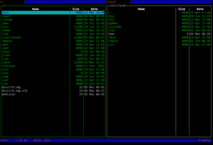

Last File Manager
Dieser Artikel wurde für die folgenden Ubuntu-Versionen getestet:
Ubuntu 14.04 Trusty Tahr
Zum Verständnis dieses Artikels sind folgende Seiten hilfreich:
 Last File Manager
Last File Manager  ist ein auf den Curses-Programmbibliotheken basierender Dateimanager für die Kommandozeile unixoider Betriebssysteme. Das Programm ist in Python geschrieben und unter der GNU General Public License (GPL) herausgegeben. Alle Operationen werden komplett über die Tastatur mittels Tastenkürzel gesteuert.
ist ein auf den Curses-Programmbibliotheken basierender Dateimanager für die Kommandozeile unixoider Betriebssysteme. Das Programm ist in Python geschrieben und unter der GNU General Public License (GPL) herausgegeben. Alle Operationen werden komplett über die Tastatur mittels Tastenkürzel gesteuert.
Programmeigenschaften:
Einspaltige oder zweispaltige Ansicht
Lesezeichen
Navigationshistorie
Dialoge mit Vervollständigungsfunktion
Tabs
Integrierte Kommandozeile mit Fähigkeiten wie Vervollständigung, Historie u.a.
Unterstützung virtueller Dateisysteme für Archive. Unterstützt werden die Archivtypen .tar.gz, .tar.bz2, .tar.xz, .zip, .rar und .7z
Schnellanzeige für Textdateien
Schnellzugriff aufs Terminal
Unicode Unterstützung
Farbige Darstellung verschiedener Dateitypen
und vieles mehr.
Installation¶
 Last File Manager kann aus den offiziellen Paketquellen über folgendes Paket installiert werden [1]:
lfm (universe)
 mit apturl
mit apturl
Paketliste zum Kopieren:
sudo apt-get install lfm
sudo aptitude install lfm
Start des Programms¶
Mit dem Befehl [2]
lfm OPTIONEN PFAD1 PFAD2
in einem Terminal wird das Programm gestartet.
Das Argument PFAD1 stellt hierbei das Verzeichnis dar, welches in der linken Verzeichnisspalte, PFAD2 jenes, welches in der rechten Verzeichnisspalte angezeigt werden soll.
Als Startoptionen sind lediglich -1 für einen Start in einspaltiger Ansicht sowie -2 für einen Start in zweispaltiger Ansicht vorgesehen.
Bedienung¶
Tastenkürzel¶
Das Programm wird komplett über Tastenkürzel gesteuert.
| Übersicht über die wichtigsten Tastenkürzel | |
| Funktion | Tastenkürzel |
| Ansicht | |
| Spaltenansicht wechseln (1-spaltig/2-spaltig) | . |
| Rechte und linke Spalte vertauschen | , oder Strg + U |
| In beiden Spalten das selbe Verzeichnis zeigen | = |
| Neuen Tab öffnen | : |
| Tab schließen | ! |
| Einen Tab nach links/rechts wechseln | < / > |
| Verzeichnisbaum (engl.: tree) anzeigen | Strg + T |
| Versteckte Dateien anzeigen bzw. verbergen | Strg + H |
| Größe (engl.: size) aller oder der ausgewählten Ordner im aktuellen Verzeichnis anzeigen. | # |
| Dateien sortieren (nach Name, Größe oder Datum) | S |
| Integrierte Befehlszeile ein-/ausblenden | Strg + X |
| Navigation | |
| Cursor hoch/runter |
↑ /
↓ oder K / J |
| Gehe zur ersten Datei des Verzeichnisses | Strg + A oder Pos1 |
| Gehe zur letzten Datei des Verzeichnisses | Strg + E oder Ende |
| Ein Verzeichnis höher | ← |
| Ins Verzeichnis gehen | → |
| Gehe zu Datei mit einem bestimmten Namen (es öffnet sich ein Eingabefeld) | Strg + S |
| Gehe zum Verzeichnis mit einem bestimmten Namen (es öffnet sich ein Eingabefeld) | G |
| Datei(en) suchen (find/grep) | / |
| Navigationshistorie anzeigen | Strg + Y |
| Zur anderen Verzeichnisspalte wechseln | Tab ⇆ |
| Dateioperationen | |
| Datei erstellen (engl.: touch) | T |
| Verzeichnis erstellen | F7 |
| Datei/Ordner/Auswahl umbenennen | F2 |
| Dateiinhalt anzeigen | F3 |
| Dateiinformationen anzeigen | I |
| Datei ausführen/Verzeichnis oder Archiv öffnen | ⏎ |
| Dateimenü (Funktionen wie Datei-Informationen, Rechte bearbeiten, Archiv erstellen oder entpacken u.a.) | F12 |
| Datei mittels benutzerdefiniertem Kommando manipulieren | @ |
| Datei/Verzeichnis/Auswahl kopieren | F5 |
| Datei/Verzeichnis/Auswahl verschieben | F6 |
| Datei/Verzeichnis/Auswahl löschen | F8 |
| Link erstellen | L |
| Link bearbeiten | ⇧ + L |
| Auswahloptionen | |
| Datei/Ordner auswählen bzw. abwählen | Einfg |
| Auswahl umkehren (invertieren) | * |
| Gruppe auswählen (mittels Namensstring/Platzhalter) | + |
| Gruppe abwählen | - |
| Lesezeichen | |
| Aktuelles Verzeichnis als Lesezeichen (engl.: bookmark) anlegen; es sind zehn nummerierte (von 0 bis 9) Lesezeichen möglich. | B |
| Lesezeichenliste anzeigen | Strg + D |
| Direkt zu einem Lesezeichen springen | 0 bis 9 (Nummer des Lesezeichens) eingeben |
| Sonstige | |
| Schnellöffnung einer Shell | Strg + O |
| Rückkehr zu lfm |
Strg +
D oder exit eingeben. |
Allgemeines Programm-Menü anzeigen (Funktionen wie find/grep, Verzeichnisgrößen anzeigen, Dateien sortieren, Dateisystem-Informationen, Historie löschen u.a.) | F9 |
| Abbruch einer Aktion | Strg + C oder Esc |
| Ausführliche Hilfe anzeigen | H |
| Beenden des Programms | Q oder Strg + Q |
Einbinden von Laufwerken/Datenträgern¶
Datenträger können in der Shell ( Strg + O ) ein- oder ausgehängt werden. Nähere Informationen bietet der Artikel mount.
Hilfe¶
Ausführliche Hilfe findet sich über die von innerhalb des Programms erreichbare Hilfefunktion (Tastenkürzel H ) oder direkt über die Datei /usr/share/doc/lfm/README.
 Programmübersicht
Programmübersicht- Erstellt mit Inyoka
-
 2004 – 2017 ubuntuusers.de • Einige Rechte vorbehalten
2004 – 2017 ubuntuusers.de • Einige Rechte vorbehalten
Lizenz • Kontakt • Datenschutz • Impressum • Serverstatus -
Serverhousing gespendet von